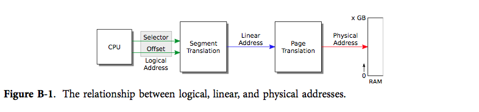
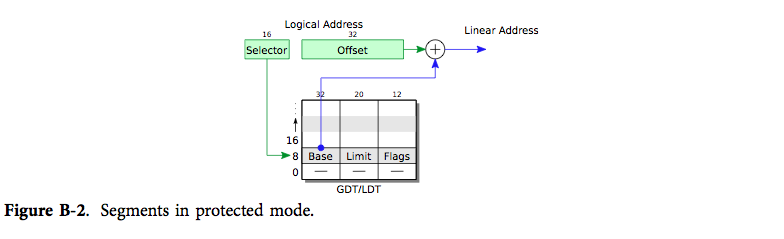

当 x86 PC 启动时，它执行的是一个叫 BIOS 的程序。BIOS 存放在主板上的非易失性存储器中，其作用是做好硬件的准备工作，接着把控制权交给操作系统。具体来说，BIOS 会把控制权交给从引导扇区（引导磁盘第一个512字节的扇区）加载的代码。引导扇区中包含引导加载器——把内核加载到内存中的指令。BIOS 会把引导扇区加载到内存 0x7c00 处，接着（通过设置寄存器 %ip）跳转至该地址。引导加载器开始执行后，处理器正处于模拟 Intel 8088 处理器的模式下。而加载器的工作则是把处理器设置为现代操作模式，并从磁盘中把 xv6 内核载入到内存中，然后将控制权交给内核。xv6 引导加载包括两个源文件，一个由16位和32位汇编混合写成（bootasm.S；（8400）），另一个由 C 写成（bootmain.c；（8500））。
引导加载器的第一条指令 cli（8412），它屏蔽处理器中断。硬件可以通过中断触发中断处理程序，从而调用操作系统的功能。BIOS 作为一个小型操作系统，为了初始化硬件设备，可能设置了自己的中断处理程序。但是现在 BIOS 已经没有了控制权，而是引导加载器正在运行，所以现在还允许中断不合理也不安全。当 xv6 准备好了后（详见第3章），它会重新允许中断。
处理器正处在模拟 Intel 8088 的实模式下，有8个16位通用寄存器可用，但实际上处理器发送给内存的是20位的地址。这时，多出来的4位其实是由段寄存器%cs, %ds, %es, %ss提供的。当程序用到一个内存地址时，处理器会自动在该地址上加上某个16位段寄存器值的16倍。因此，内存引用中其实隐含着使用段寄存器的值：取指会用到 %cs，读写数据会用到 %ds，读写栈会用到 %ss。

xv6 假设 x86 指令在做内存操作时使用的是虚拟地址，但实际上 x86 指令使用的是逻辑地址（见表 B-1）。逻辑地址由段选择器和偏移组成，有时又被写作segmemt:offset。更多时候，段是隐含的，所以程序会直接使用偏移。分段硬件会完成上述处理，从而产生一个线性地址。如果允许分页硬件工作（见第2章），分页硬件则会把线性地址翻译为物理地址；否则处理器直接把线性地址看作物理地址。
引导加载器还没有允许分页硬件工作；它通过分段硬件把逻辑地址转化为线性地址，然后直接作为物理地址使用。xv6 会配置分段硬件，使之不对逻辑地址做任何改变，直接得到线性地址，所以线性地址和逻辑地址是相等的。由于历史原因我们用虚拟地址这个术语来指程序操作时用的地址。xv6 的虚拟地址等于 X86 的逻辑地址，同样也等于分段硬件映射的线性地址。等到开启了分页后，系统中值得关心的地址映射只有从线性地址到物理地址的映射。
BIOS 完成工作后，并不能保证 %ds, %es, %ss 的值是多少，所以在屏蔽中断后，引导加载器的第一个工作就是将 %ax 置零，然后把这个零值拷贝到三个段寄存器中（8415-8418）。
虚拟地址 segment:offset 可以产生21位物理地址，但 Intel 8088 只能向内存传递20位地址，所以它裁剪了地址的最高位：0xffff0 + 0xffff = 0x10ffef，但在 8088 上虚拟地址 0xffff:0xffff 则是引用物理地址 0x0ffef。早期的软件依赖硬件来忽略第21位地址位，所以当 Intel 研发出使用超过20位物理地址的处理器时，IBM 就想出了 PC 兼容硬件所必须的兼容技巧。如果键盘控制器输出端口的第2位是低位，则物理地址的第21位始终被清零；否则，第21位可以正常使用。引导加载器用 I/O 指令控制端口 0x64 和 0x60 上的键盘控制器，使其输出端口的第2位为高位，来使第21个地址地址正常工作（8436）。
对于使用内存超过65536字节的程序而言，实模式的16位寄存器和段寄存器就显得非常困窘了，显然更不可能使用超过 1M 字节的内存。x86 系列处理器在 80286 之后就有了保护模式。保护模式下可以使用更多位的地址，并且（80386之后）有了“32位”模式使得寄存器，虚拟地址和大多数的整型运算都从16位变成了32位。xv6 引导程序依次允许了保护模式和32位模式。

在保护模式下，段寄存器保存着段描述符表的索引（见图表 B-2）。每一个表项都指定了一个基物理地址，最大虚拟地址（称为限制），以及该段的权限位。这些权限位在保护模式下起着保护作用，内核可以根据它们来保证一个程序只使用属于自己的内存。
xv6 几乎没有使用段；取而代之的是第2章讲述的分页。引导加载器将段描述符表 gdt（8482-8485）中的每个段的基址都置零，并让所有段都有相同的内存限制（4G 字节）。该表中有一个空指针表项，一个可执行代码的表项，一个数据的表项。代码段描述符的标志位中指示了代码只能在32位模式下执行（0660）。正是由于这样的设置，引导加载器在进入保护模式时，逻辑地址才会直接映射为物理地址。
引导加载器执行 lgdt（8441）指令来把指向 gdt 的指针 gdtdesc（8487-8489）加载到全局描述符表（GDT）寄存器中。
加载完毕后，引导加载器将 %cr0 中的 CR0_PE 位置为1，从而开启保护模式。允许保护模式并不会马上改变处理器把逻辑地址翻译成物理地址的过程；只有当处理器读取 GDT 地址的段寄存器的值被改变为内部段的设置后，才会发生变化。我们没法直接修改 %cs，所以使用了一个 ljmp 指令（8453），使得代码段选择器被设置。跳转指令会接着在下一行（8456）执行，但这样做实际上将 %cs 指向了 gdt 中的一个代码描述符表项。该描述符描述了一个32位代码段，这样处理器就切换到了32位模式下。就这样，引导加载器让处理器从8088进化到80286，接着进化到了80386。
在32位模式下，引导加载器首先用 SEG_KDATA（8458-8461）初始化了数据段寄存器。逻辑地址现在是直接映射到物理地址的。在运行 C 代码之前的最后一个步骤是在空闲内存中建立一个栈。内存 0xa0000 到 0x100000 属于设备区，而 xv6 内核则应该是放在 0x100000 处。引导加载器自己是在 0x7c00 到 0x7d00。本质上来讲，内存的其他部分都能用来存放栈。引导加载器选择了 0x7c00（在该文件中即 $start）作为栈顶；栈从此处向下增长，直到 0x0000，不断远离引导加载器代码。
最后加载器调用 C 函数 bootmain（8468）。bootmain 的工作就是加载并运行内核。只有在出错时该函数才会返回，这时它会向端口 0x8a00（8470-8476）发送数个输出字。在真实的硬件中，并没有设备连接到该端口，所以这段代码什么也没有做。如果引导加载器是在 PC 模拟器上运行，那么端口 0x8a00 则会连接到模拟器并把控制权交还给模拟器本身。无论是否使用模拟器，这段代码接下来都会执行一个死循环（8477-8478）。而一个真正的引导加载器则应该会尝试输出错误信息。
引导加载器的 C 语言部分 bootmain.c（8500）希望能在磁盘的第二个扇区开头找到一份可执行内核的拷贝。如我们在第2章所见，该内核是 ELF 格式的二进制文件。为了读取 ELF 头，bootmain 载入 ELF 文件的前4096字节（8514），并将其内存内拷贝放在地址 0x10000 处。
下一步是检查是否是一个 ELF 文件，而不是一个未初始化磁盘。bootmain 从磁盘中 ELF 头之后 off 字节处读取扇区的内容，并写到内存中地址 paddr 处。bootmain 调用 readseg 将数据从磁盘中载入（8538），并调用 stosb 将段的剩余部分置零（8540）。stosb（0492）使用 x86 指令 rep stosb 来初始化内存块中的每个字节。
现在内核已经被编译并链接好，我们应该能在虚拟地址 0x80100000 处找到内核。因此，函数调用指令使用的地址都是 0xf01xxxxx 的形式；你可以在 kernel.asm 中找到类似的例子。这个地址是在 kernel.ld 中设置的。0x80100000 是一个比较高的地址，差不多处在32位地址空间的尾部；至于原因，我们在第2章中对此作出了详细解释。当然，实际的物理内存中可能并没有这么高的地址。一旦内核开始运行，它会开启分页硬件来将虚拟地址 0x80100000 映射到物理地址 0x00100000（内核假设物理内存中存在该地址）。引导程序运行到现在，分页机制尚未被开启。取而代之的是，kernel.ld 将原本指向 0x00100000（即引导加载器拷贝内核的目的物理地址）的 ELF paddr 指向分页硬件最终将会指向的地方。
引导加载器的最后一项工作是调用内核的入口，即内核第一条指令的执行地址。在 xv6 中入口地址即 0x10000c：
# objdump -f kernel
kernel: file format elf32-i386
architecture: i386, flags 0x00000112:
EXEC_P, HAS_SYMS, D_PAGED
start address 0x0010000c
按照惯例，在 entry.S（1036）中定义的 _start 符号即 ELF 入口。由于 xv6 还没有建立虚拟内存，xv6 的入口即 entry（1040）的物理地址。
该附录中谈到的引导加载器编译后大概有470字节的机器码，具体取决于编译优化。为了放入比较小的空间中，xv6 引导加载器做了一个简单的假设：内核放在引导磁盘中从扇区1开始的连续空间中。通常内核就放在普通的文件系统中，而且可能不是连续的。也有可能内核是通过网络加载的。这种复杂性就使得引导加载器必须要能够驱动各种磁盘和网络控制器，并能够解读不同的文件系统和网络原型。也就是说，引导加载器本身就已经成为了一个小操作系统。显然这样的引导加载器不可能只有512字节，大多数的 PC 操作系统的引导过程分为2步。首先，一个类似于该附录介绍的简单的引导加载器会从一个已知的磁盘位置上把完整的引导加载器加载进来，通常这步会依靠空间权限更大的 BIOS 来操作磁盘。接下来，这个超过512字节的完整加载器就有足够的能力定位、加载并执行内核了。也许在更现代的设计中，会直接用 BIOS 从磁盘中读取完整的引导加载器（并在保护模式和32位模式下启动之）。
该附录假设在开机后，引导加载器运行前，唯一发生的事即 BIOS 加载引导扇区。但实际上 BIOS 会做相当多的初始化工作来确保现代计算机中结构复杂的硬件能像传统标准中的 PC 一样工作。
基于扇区大小，文中提到的调用 readseg 的作用和 readseg((uchar*)0x100000, 0xb500, 0x1000) 的作用是相同的。实际上，这个草率的实现并不会导致错误。这是为什么呢？
一些关于 BIOS 存在时长与安全性的问题。
假设你希望 bootmain() 能把内核加载到 0x200000 而非 0x100000，于是你在 bootmain() 中把每个 ELF 段的 va 都加上了 0x100000。这样做是会导致错误发生的，请说明会发生什么错误。
引导加载器把 ELF 头拷贝到了一个随意的地址 0x10000 上，这样做看起来似乎有些危险。那么为什么不调用 malloc 来分配它所需要的空间呢？